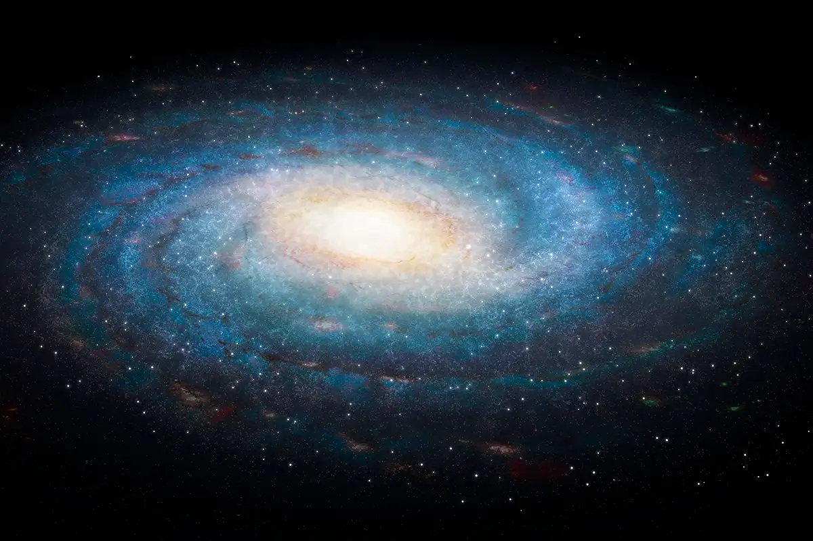

What is a Galaxy?

A Galaxy is a gravitationally bound system composed of stars, remnants, interstellar gas and dust, a large, but largely unknown, component called dark matter. Galaxies range in size from dwarfs containing a few thosand stars to giants with one hundred trillion stars. Our own galaxy, the Milky Way, is just one of billions in the observable universe, each a massive collection of suns and solar systems.
"Galaxies are the building blocks of the Universe."
Essential Galaxy Facts
Here are some fudamental facts about galaxies:
- The Milky Way is our home galaxy.
- Galaxies are classifield by their shape (spiral, elliptical, irregular).
- The Andromeda Galaxy is the closest major galaxy to the Milky Way.
- Most large galaxies contain a supermassive black hole at their center.
The Mystery of Dark Matter
One of the most fascinating aspects of galactic structure is the presence of **Dark Matter**. Galaxies spin much faster than they should based on the visible matter (stars, gas, and dust) they contain. Imagine swinging a ball on a string - if you swing it faster, you need more force to hold it. In a galaxy, the gravitational force needed to keep the outer stars from flying away at their high speeds is much greater than the gravity provided by the visible matter.
Scientists estimate that Dark Matter makes up about 85% of the total mass of the universe! It's called "dark" because it doesn't emit, absorb, or reflect light, making it invisible to telescopes. Its existence is inferred solely from the gravitational effects it has on visible matter. The hunt to discover what Dark Matteri is composed of is one of the biggest and most exciting puzzles in modern astronomy today.
Main Types of Galaxies
| Type | Shape | Example |
|---|---|---|
| Spiral | Flat disk with rotating spiral arms | Milky Way |
| Elliptical | Oval, egg-shaped, or sphrcal | Messieer 87 |
| Irregular | No regular or defined structure | Magellanic Clouds |